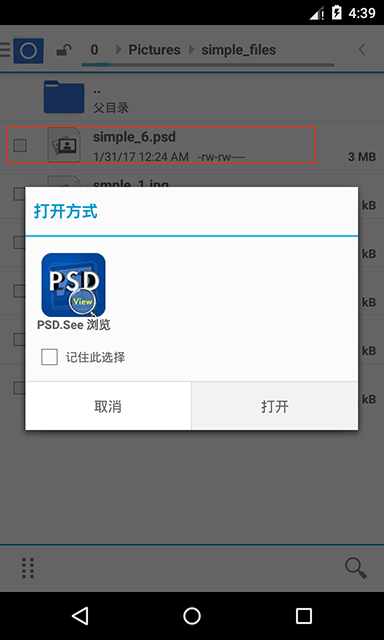
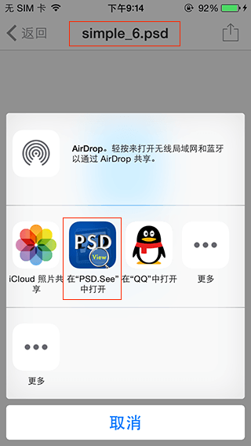
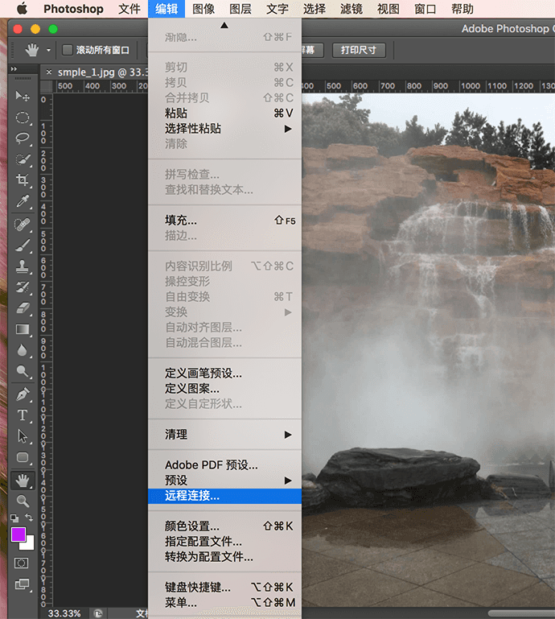
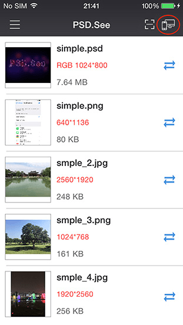
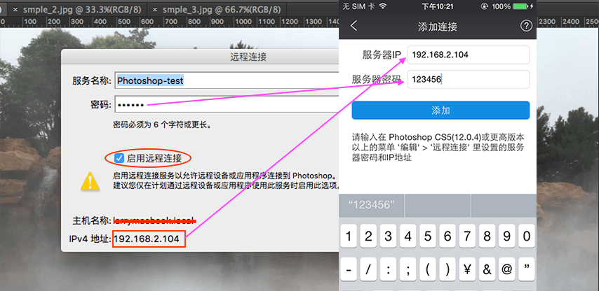
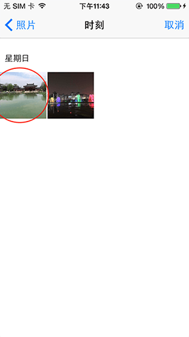
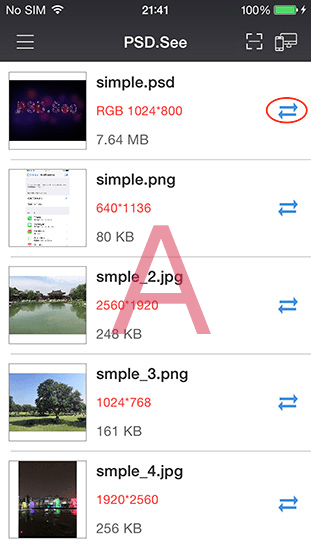
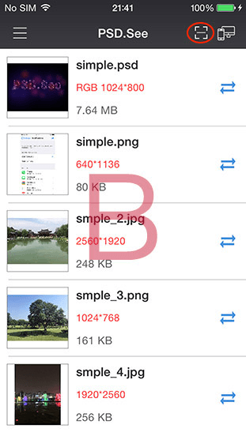
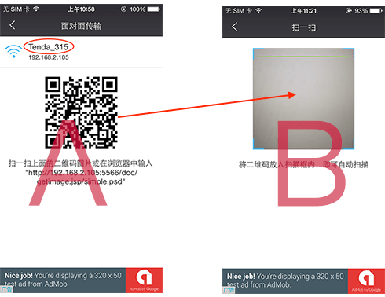
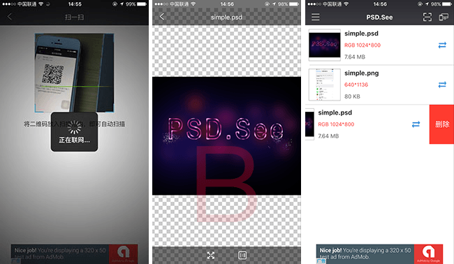

PSD.See 是一款可在移动设备上浏览和查看Adobe Photoshop 的psd格式文档的工具；可运行在android 和 ios两种设备上。ios用户可在App Store 中搜索"PSD.See"安装应用；android用户可在360手机助手, 应用宝 或 google play中搜索"PSD.See" 安装应用。
使用PSD.See 您可以查看Adobe Photoshop 的psd文件，还可以查看bmp, jpg, png格式的图片文件。下面介绍一下PSD.See主要功能，以帮助您能快速的了解和使用app。
您可以使用PSD.See来打开、查看第三方应用（如云盘，邮件）中收到或存储的psd文件。
(android 效果图)

(iphone 效果图)

当您使用PSD.See打开选中的psd文件或图片后即可对文件进行移动或缩放操作
该功能需要Photoshop CS5(12.0.4)或更高版本； 请在您的电脑上运行Photoshop，然后打开一个psd文件或图片。选择"编辑"菜单下的"远程连接..."菜单项。

在弹出的"远程连接"对话框中输入密码并且选中"启用远程连接"选项；然后点击"确定"按钮。

在您的手机上运行PSD.See, 点击右上角的"远程连接"

请注意您的电脑和你的手机必须在同一个wifi网络里，点击右上角的添加按钮进行设置。

在“添加连接”界面中输入前面在Photoshop “远程连接”对话框中显示的IP地址已经您设置的密码，然后点击"添加"按钮

当您的手机连接到Photoshop 并同步成功后，您在电脑上Photoshop里所做每一步操作都会实时显示在您的手机上；您可以点击手机上左下角的保存按钮将同步到手机的图片保存到手机的相册里，也可以点击右下角的添加按钮从相册中选择一张图片同步到您电脑上的Photoshop里。

但点击了“添加”按钮会打开系统相册，选择一张您要同步到Photoshop的照片。

当同步完成后，您电脑里的Photoshop中将会新建一个您手机里相同图片的psd文档。
该功能可以方便两个用户通过二维码进行文件传输，点击A设备文件右边的"传输"按钮

进入该界面后会生成要传输文件的二维码

点击B设备上的“扫一扫”按钮，请确保A,B两台设备连在同一WIFI下。

请将A设备上的二维码置于B设备的扫描框中

如下图所示，当扫描完成后A设备上的文件将会传输到B上并会显示出来。

android用户可以使用该功能将您SD卡中的psd文件添加到文件列表中以方便浏览。

android 可以使用该功能将SD卡中的图片文件添加到文件列表中以方便您浏览。